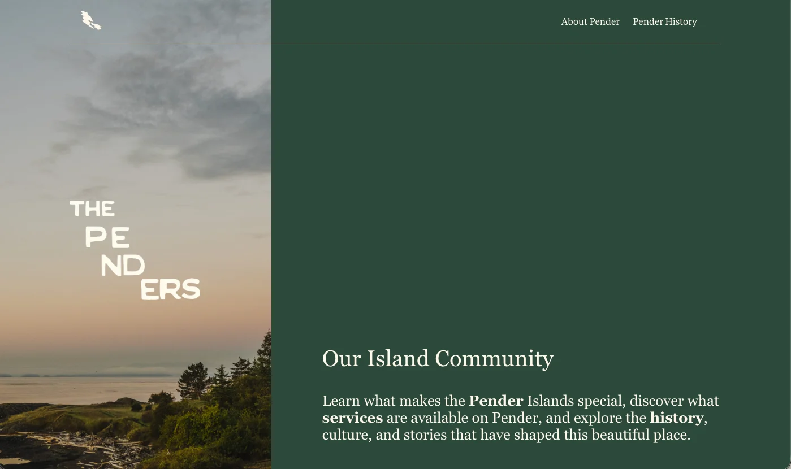
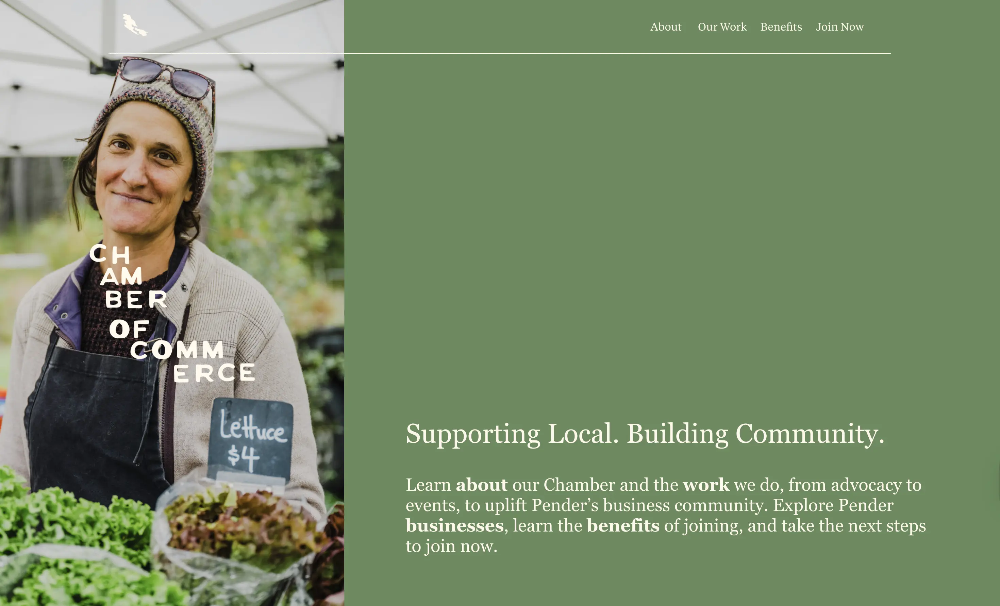
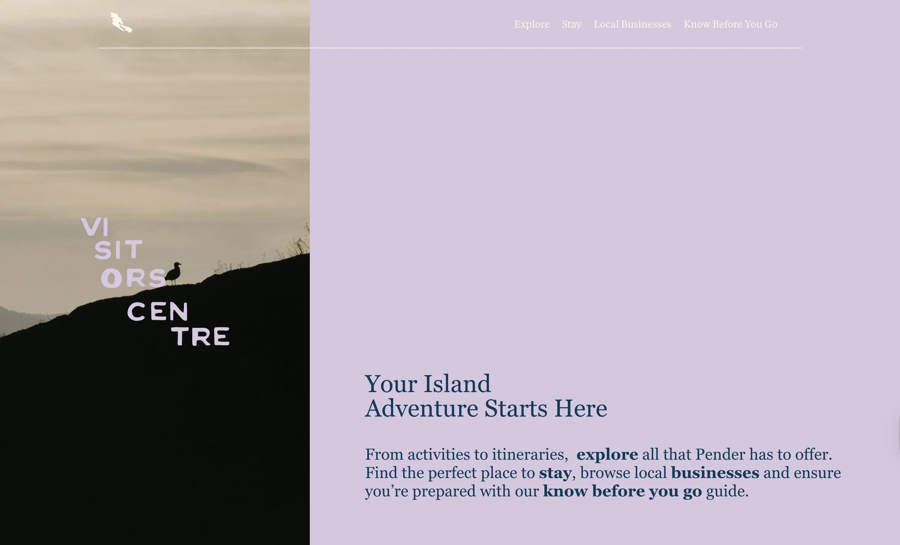
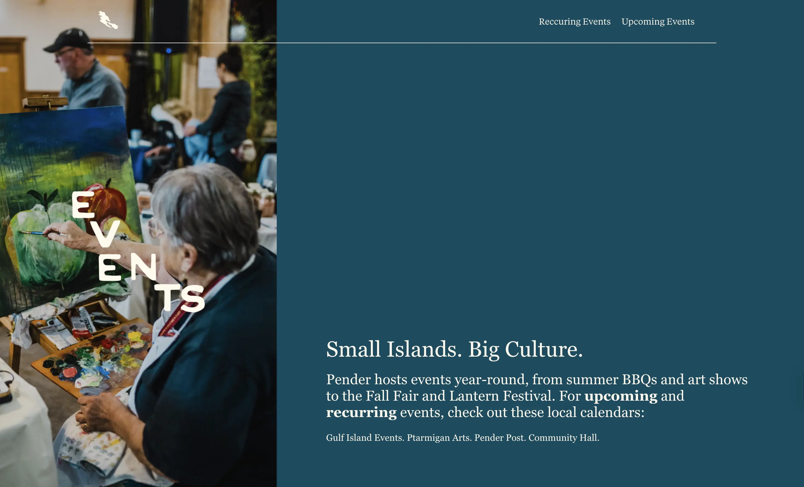

Pender Island Chamber Website
Overview
What began as a co-op opportunity evolved into an ongoing freelance collaboration to support the Pender Island Chamber of Commerce & Visitor Center through a larger organizational transition. As the Chamber moved away from the Southern Gulf Islands Tourism Partnership, it needed both a clearer digital identity and a website structure that better reflected its independent role. My work focused on restructuring the site, clarifying content, and helping shape a more cohesive foundation for the brand moving forward.
Background
The existing website had grown organically over time, which meant content was scattered, navigation was inconsistent, and important information was harder to find than it should have been. At the same time, stakeholders in the Chamber were looking to brodan the scope and content throughout the website, to help support pender island residents, business owners, and visitor experience.
This made the project more than a visual refresh. It was a restructuring problem. The challenge was to create a system that could support visitors, locals, and businesses without overwhelming them.
Process
I began by stepping back from visuals and focusing on how people actually use the site. I mapped user needs across different audiences, including visitors looking for places to stay, people searching for local services, and businesses trying to understand the Chamber itself. This helped shift the project away from simply organizing pages and toward designing clearer user journeys.
To make sense of the existing content, I externalized the entire site structure by mapping pages and information into a spatial system. Laying everything out at once made it easier to group related content, identify gaps and redundancies, and test different hierarchies before committing to a digital sitemap.




From there, I rebuilt the site structure from the ground up. I developed a clearer sitemap, grouped content into more intuitive categories, and worked to reduce ambiguity in page naming and hierarchy. Much of this process involved asking simple but important questions: what is this page for, who is it serving, and where would someone expect to find it?
Because the project involved feedback from multiple collaborators, process design also became part of the work. Comments were sometimes happening across shared documents, email, and the site builder, which created moments of misalignment. To keep the project grounded, I centralized decisions where possible, highlighted unclear areas instead of making assumptions, and broke the work into smaller reviewable pieces.
Solution
The final direction was a more modular, user-centered website structure with clearer navigation, reusable page templates, and a stronger content hierarchy. I organized the site into distinct sections such as Visitor Centre, Chamber, and Business Directory, making it easier for users to quickly understand where to go based on their needs.
I also designed the content system to be scalable. Rather than treating each page as a one-off layout, I focused on creating repeatable structures that could support future growth while still feeling cohesive. The result was a site that works more like a system than a collection of disconnected pages.
Results
The project is currently ongoing, with the website set to launch in early April. So far, the work has created a much stronger foundation for both the user experience and the internal workflow behind the site. Stakeholders have been able to align more quickly on structure and content direction, and the clearer organization has reduced friction throughout the build process.
As the site moves toward launch, the focus is on refining content and ensuring consistency across pages. Because the system was designed to be modular and scalable, it can continue to evolve after launch without requiring major restructuring, which was one of the key goals from the beginning.
Learnings
This project reinforced for me that structure is design. If the organization of information is unclear, no amount of visual polish can fully solve the experience. I also learned how important it is to design the collaboration process alongside the interface, especially in projects with multiple stakeholders and evolving feedback.
More than anything, this work reminded me that good design is often about helping people feel oriented. Sometimes the most valuable decision is not adding something new, but making what already exists easier to understand.